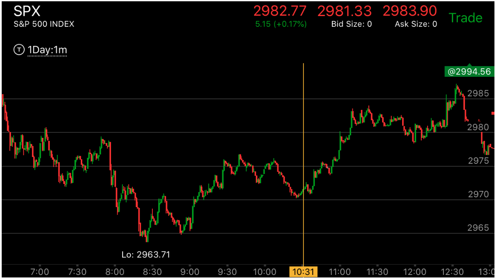
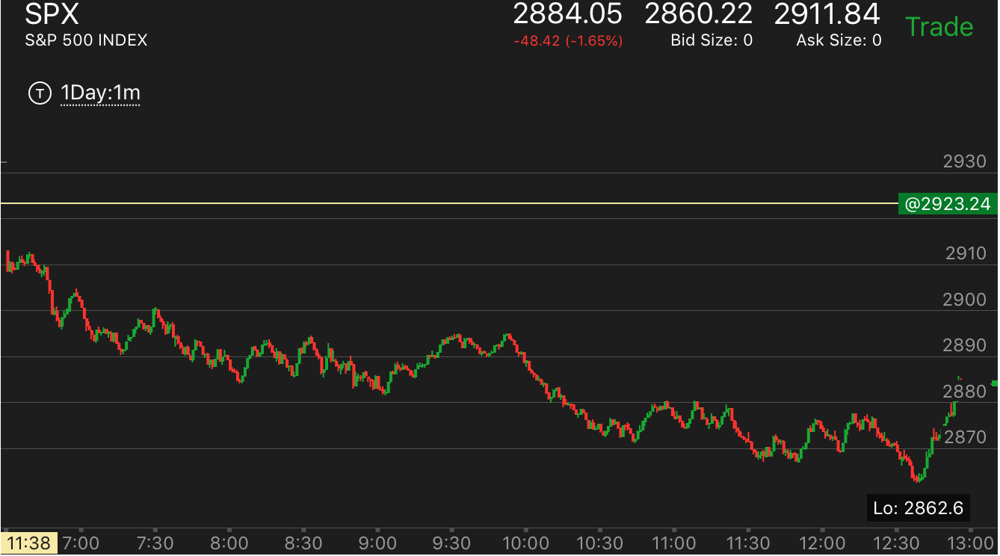
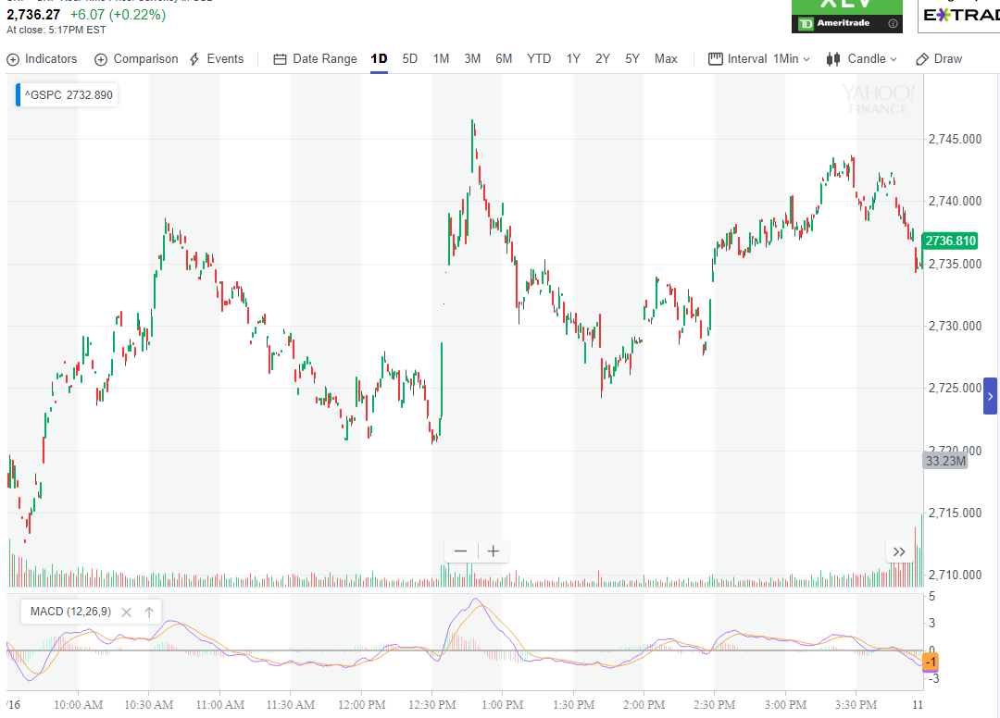
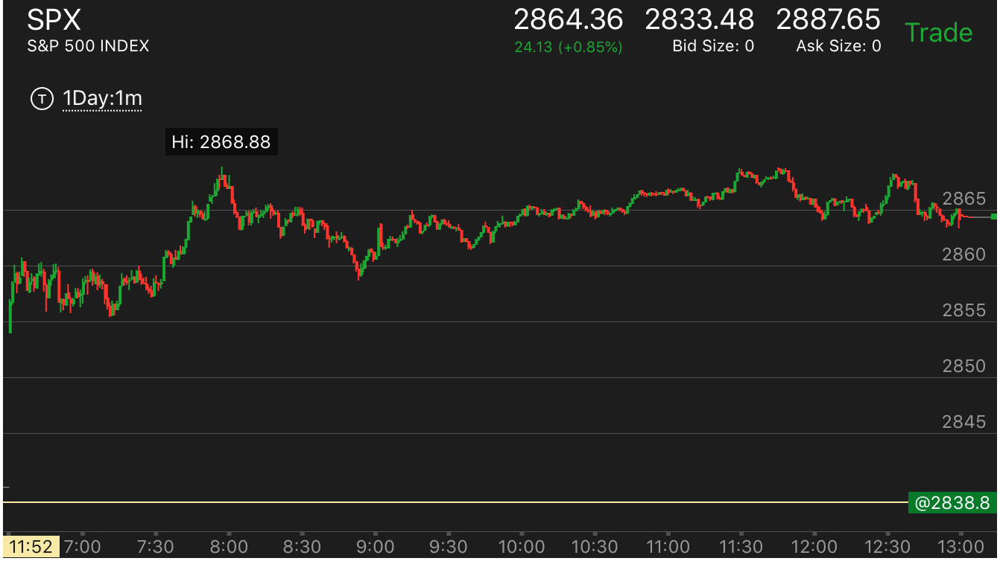
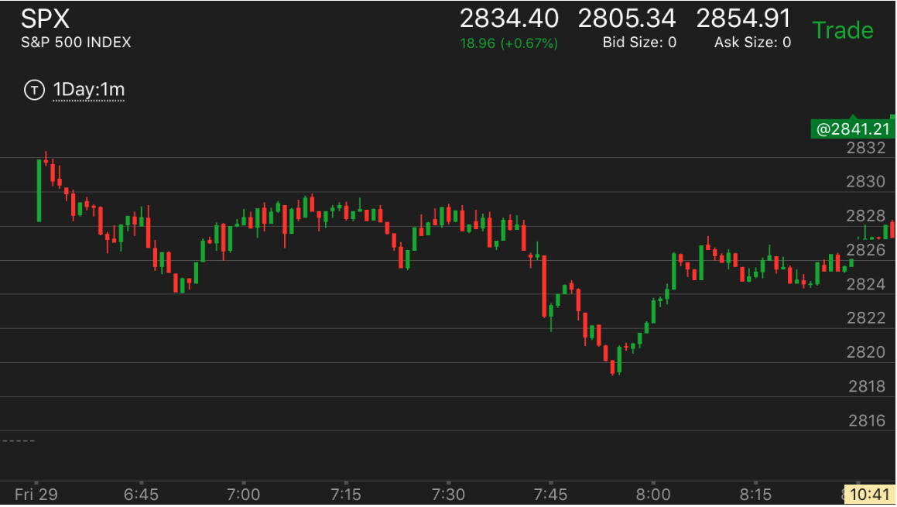
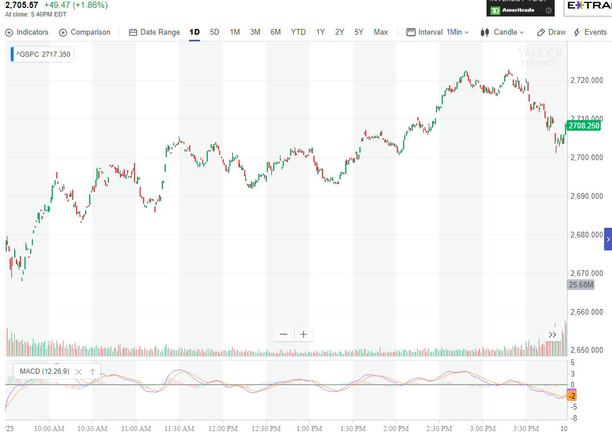

从速度和形状识别哪个是反向走势和哪个是正向走势
- 主要走势也不一定会创新低或者新高。这个由于时间或者更大走势的要求，但是会一直运动到收盘。
- 在一个明显的下跌走势当中，出现上涨走势，如何识别它是全面反转，还是大幅回调？这个就需要对上涨的
形状做出分析。真的上涨走势和反向的走势是完全不同的。
- 反向走势的，它一开始就运动很快，然后出现真空后，回调很小。就继续运动。
从人的心理上，它给人以追赶不及的感觉，如果一旦卖掉，很难有机会买回来。
没有回调或者回调很小。以上涨的反向走势为例，在一个下跌的走势
当中，它从最低点一开始就快速上涨，回调很小。到了顶点后，在高处徘徊很久，很难下来。让人很不耐烦。
一旦下来就是快速下来，创新低。让在低处接盘的单子套牢。
- 正向走势的特点，特别是一开始的第一次上涨，它可以一开始就很快，然后大幅回调，常常让人有反向操作的空间。
特别是在反转的时候。比如下跌结束，开始上涨的时候，一种是在底部很慢的上涨，时间很长，显得很弱。还有一种是，
第一浪上涨就很大，然后就回调，有时候，回调幅度很大，好像前面的下跌没有结束。
大涨后，下跌的走势
大跌后，上涨的走势。
两个开盘大涨走势的对比
上涨主要走势的启动和大幅回调
两种上涨走势的对比
两种上涨走势的对比
TOP

图示：7:10经过快速下跌后，开始反弹，它的反弹非常的快速，第一浪很大后，走平，再次上涨，
这个如果出现在上涨的后期，是正常的，但是这个出现在刚刚上涨，出现在反转当中，不正常。
7：30它稍微回调后，再次快速上涨。一直到8：00上涨完毕，它形成了一个很大的真空。开始走平。这样的走势
可以判断，一定是一个逆向走势，而不是主要走势，它回调的位置接近了前面的高点。其实就算超过了高点，
也不代表是对的。从另外一个角度分析，它从最低点的反向走势，一下到了高点附近，速度太快了。一定不是
主要走势。它走平后，就会下跌。

图示：8：30，它出现了底部，开始上涨。刚刚上涨了一个两段走势，就大幅回调。
几乎回调了所有的涨幅。然后再次创立新高。说明这个是上涨的主要走势。它一定会创新高。

图示：9:00从最低点上涨。一开始速度就很快。说明这个走势不是一个正常的反转。而是一个回调。大势并没有反转。
但是，它的反弹也可能很大。所以要注意观察最近的下跌低点。估计它可能停在哪里。在这个情况里，它停留在2895附近。是一个小的两段下跌走势的高点。

图示:
1. 10：00第一浪上涨后，它在高点走平，然后大幅回调，回到了前面的真空点，然后再次大幅上涨。说明是个主要的上涨走势。
从另外的角度看，它在上涨的时候，也出现了一个巨大的真空，这个真空是10：30开始形成的，但是它一直不断的缓慢上涨，
一直不填补，直到收盘都在上涨。关键在于它不断的缓慢创新高。如果是一个高点后，一直走平，那么会反转。

图示：10:30出现了加速上涨后，开始下跌。然而，它的下跌不是真的下跌，而是填补前面的真空。
可以看到，开盘的时候，9：45的冲高的真空很大。这次回调，恰好填补了这个真空，然后出现了双底走势后。大涨。

图示：7:20出现了5浪上涨，然后快速回调。它的下跌速度很快。可见不是真正下跌。它的下跌恰好填补了5浪上涨的真空。
从8：40开始继续上涨。
大涨后，下跌的走势
TOP

图示：开盘后，快速大涨，然后开始下跌。下跌速度远远低于上涨速度。
这时可以断定，它一定会大跌的。9：40冲高后，下跌，反弹，不到高点，再次下跌。再次反弹。
这个也是典型的大跌走势

图示：2:00宣布利率后，大涨。它的反向走势速度其实也比较块，但是反弹很大。这样就显得慢了。说明是一个真正的跌势。如果
算时间的话。其实它后面跌的很快。超过前面上涨的速度。说明不能光以时间来看。它只要比第一段慢就可以了。后面则是要考虑，这个是一个反向走势，
如果没有到达底部，那么就会继续跌。
大跌后，上涨的走势。
TOP
下跌速度很快，上升速度看起来很快。但是比起下跌来说，还是慢多了。

图示：9：10出现了底部加速，然后迅速反弹。
这时要首先确定它的底部加速走势。然后看它反弹的样子。虽然它第一浪反弹幅度很大，
但是比起前面的下跌来说，速度很慢。到了9：50，它才刚刚到了前面下跌的点。
这样可以认定。它一定会大涨。

图示：10：20，出现了狭窄底部后，大涨。然后走平很久。可以看到它走平的点
比开始走平的点低很多。说明会继续上涨。它上涨后，很快下来。回到第一浪的开始。
这个其实说明上涨并没有结束。后面还会上涨。要记住，它后面只有大幅上涨才算结束。

图示:10：30出现了第二段下跌。另外这个也是一个
冲高后，快速下跌的例子。这样一定会反弹。它反弹的速度也是远远低于下跌速度。
这个说明它一定会超过下跌点2740.

图示：开盘后，下跌，走平后，再次下跌。虽然这个走平时间很短。
但是却很重要。这个走平就成了一个分界线。上面就是真空。
6:45下跌后，反弹。一直走平。但是一直没有超过前面的开盘下跌的走平点。然后大跌。
这个大跌，其实幅度不大，但是却分为两段。这样就形成了底部加速，而且也是一个两段走势。
表示跌势结束。
这时它反弹。反弹虽然看起来速度很快。但是它不到下跌开始点2828，就开始走平很久。这样
平均来看，仍然很慢。表示未来一定会超过2828这个点。
上涨主要走势的启动和大幅回调:
TOP

图示：大幅低开后，一开始就走低，然后快速冲高，
冲高后，在高点走出了横向5浪。一直不下来，如果对做多的人来说，等了很久也不会下来，其实是处于跌势。
它一旦下来，就大跌。
大跌时候出现了两段下跌走势。从10：10到10：40，它一直在底部，不超过两段走势的第二段的开始，
这样徘徊20分钟后，形成了一定的积累走势。它开始上涨后，在11：00，12：00都大幅回调，说明上涨走势是
主要走势。未来一定会大涨。
两个开盘大涨走势的对比
TOP

图示：大盘开盘大涨后，在高点没有停留一分钟，立刻回调。
回调的时候出现了两段走势，而且回调基本填补了真空。说明有了向上的动力。它后来有一次填补真空。
这次停留时间比较长。更加确认了填补真空。另外它的开盘是个走低后，双底的走势，这个双底走势，
在冲高的时候，也是冲了一下后，不到高点，回调。说明了它会超过高点大涨。

图示：大盘开盘后，走平几分钟，大涨。它在高点回调很小，10：00的时候，加速上涨。
其实形成了两段上涨的走势，它下来的时候，速度很慢，其实一直在2790这个点以上徘徊，形成了积累走势。
说明要大跌。